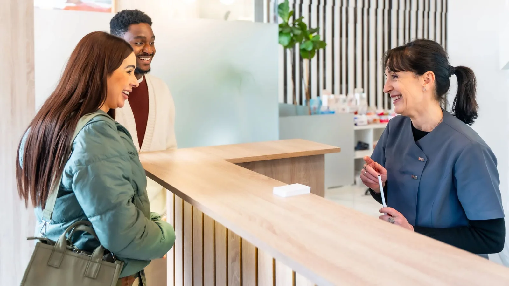

About Us
A small practice, run the way we think dentistry should be run.
Lava Street Dental opened in the middle of Warrnambool with one straightforward idea behind it: that most people would rather see the same dentist every time.
That sounds unremarkable until you consider how uncommon it has become. Dentist turnover is high across the profession, and plenty of patients have not seen the same clinician twice in years. This practice is deliberately built the other way around — one dentist, a small team, and a book that is managed so appointments are not rushed.

What we set out to do
Be the dentist you keep.
Other than in unforeseen circumstances, Dr Meg is the person you will see at every appointment, so your treatment is planned by someone who has followed it from the start.
Explain things properly.
You should leave knowing what is going on in your mouth, what your options are, what each one costs and what happens if you do nothing. If something can wait, we will say so.
Take comfort seriously.
Gentle technique is not a marketing line here. It shapes how appointments are scheduled, how anaesthetic is given, and how we work with people who are nervous.
Keep good treatment close to home.
A well-equipped regional practice means fewer people driving to Melbourne for care that can be delivered properly in Warrnambool.
What this costs, and why
We do not compete on price.
The materials, the laboratory work and the time set aside for each appointment all cost more than a faster approach would. Crowns and bridges are made by a dental technician rather than milled chairside on the day. Implant systems are chosen for their published research record and for the long-term availability of components. Appointments are longer than they would be if the aim were volume.
That will not suit everyone, and we would rather say so plainly than surprise you at the front desk. What you will always get is a written plan with costs set out before treatment begins, and an honest answer about what is worth doing and what can wait.
What an appointment looks like here
Appointments are scheduled with enough time to do the job without rushing, which is a decision about how the book is run rather than a promise about any given day.
At a first visit you will get a full examination and an honest account of where things stand — including when the answer is that nothing needs doing, or that something is better watched than treated. Where treatment is needed, you will be given a written plan with staged costs before anything begins. Nothing is started on the assumption you have agreed to it.
Where a case is genuinely better handled by a specialist, we will say so and arrange the referral rather than pressing on.
How the practice is equipped
Digital intra-oral scanning replaces putty impressions wherever it is suitable. 3D CBCT imaging is used for implant planning and for assessing roots. A diode laser is used for selected gum procedures. An air-polishing system is used for cleans.
None of that is technology for its own sake, and imaging is taken only where there is a clinical reason for it.

Who we look after
Patients come to us from Warrnambool, Port Fairy, Koroit, Allansford, Dennington and the surrounding districts. The practice is in the CBD at [STREET ADDRESS], a short walk from Coles, with parking options close by.
We see everyone from children at their first appointment through to people needing more involved restorative and implant work.